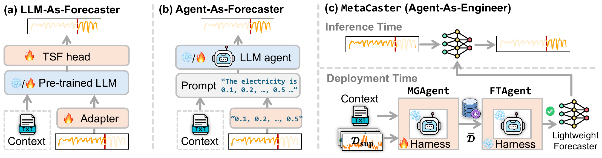
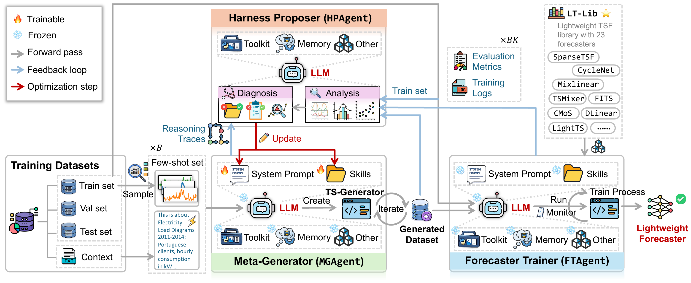
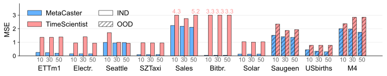
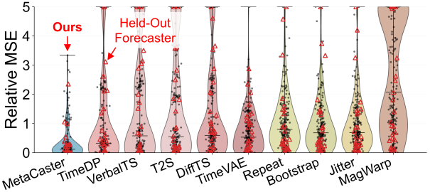
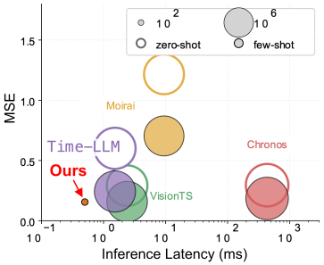
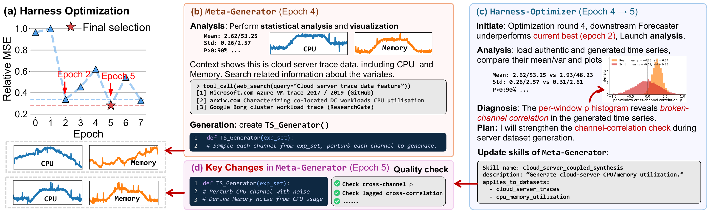

Meta-Harness-Optimized Agent for End-to-End
Few-Shot Learning of Lightweight Time Series Forecasters
ChengAo Shen1, Wenchao Yu2, Fangyu Wu3, Dongjin Song4, Hanghang Tong5, Dongsheng Luo6, Wei Cheng2, Haifeng Chen2, Jingchao Ni1
1University of Houston 2NEC Labs 3University of Waterloo 4University of Connecticut 5University of Illinois at Urbana-Champaign 6Singapore Management University
Time series forecasting is evolving toward multimodal and agentic settings, yet using foundation models remains uneconomical in resource-constrained scenarios, where compact, specialized forecasters are more desirable. However, lightweight forecasters typically require substantial training data, limiting their use in domains with scarce, slowly accumulated, or privacy-sensitive time series. To address this dilemma, we investigate the challenging problem of few-shot learning for lightweight forecasters.
We propose MetaCaster, a meta-harness-optimized multi-agent framework that uses agentic data generation to automatically train specialized lightweight forecasters from only a few examples and textual contexts. Our work highlights a new TSF paradigm in which agents act not as forecasters but as intermediary engineers that prepare efficient, task-specific forecasters for deployment.
Unlike existing generative models that focus on data realism, MetaCaster generates data to ensure that forecasters trained on it perform comparably to those trained on real data of the same size in the target domain. Experiments on 18 datasets, 23 state-of-the-art lightweight forecasters, and 14 baselines demonstrate that MetaCaster achieves both data efficiency and computational efficiency while maintaining high-quality TSF performance.

MetaCaster generates a sufficient dataset 𝒟̄ from the limited data in {𝒟sup, 𝖢}, and then splits 𝒟̄ into a training set and a validation set for training the forecasters. To enable agent optimization, it adopts a meta-harness strategy built from three components.
MGAgent the meta-generator. It is centered on a replaceable LLM. Rather than generating time series directly, the LLM uses its Harness to create a TS-Generator program that integrates domain-specific knowledge, rules, and models pertinent to the domain, circumventing the LLM's limited capability in direct time series inference. Instead it exploits the LLM's strengths in planning, reasoning, and coding — hence the "Meta-" prefix. Upon receiving {𝒟sup, 𝖢}, MGAgent analyzes the series in 𝒟sup, creates the TS-Generator to produce 𝒟̄, and performs quality checks. It accepts 𝒟̄ if all checks pass; otherwise it returns to revise the TS-Generator.
FTAgent the forecaster trainer. It splits 𝒟̄ into training and validation sets according to the real partition sizes, orchestrates computational resources to train the forecasters, and evaluates them on the test set, producing trained forecasters, evaluation metrics, and training reports. It composes programs that train each forecaster with a grid search of hyperparameters, organizes (forecaster, hyperparameter, dataset) triplets into a queue, and assigns available GPUs for maximally parallel execution — monitoring processes, resolving errors, and recovering interrupted jobs without human intervention.
HPAgent the harness proposer, the meta-harness. Since the system prompt and skills define the key behavior of MGAgent, the LLM is frozen and they are used as the trainable parameters θ. HPAgent oversees the entire pipeline through three stages: self-planned analysis, diagnosis, and update. It relies heavily on long-term memory, which stores dataset snapshots, evaluation metrics, training logs, analysis and diagnosis results, and θ update logs across epochs. This memory enables rollback of harmful updates and allows HPAgent to output the best θ at the end of optimization.

The table compares MSE across generation models, augmentation methods, and MetaCaster. We randomly hold out 3 forecasters from LT-Lib and report the average performance over the remaining 20; the held-out forecasters are used to assess generalization to unseen forecasters. The table also reports forecasters trained with the K-shot support set 𝒟sup and with the full set 𝒟tr, serving as lower and upper performance references.
Several observations: MetaCaster outperforms the generation and augmentation baselines in most cases, demonstrating the benefit of optimizing data generation for forecasting; its performance improves with larger K, showing effective few-shot utilization; when K ≥ 30 it approaches or even surpasses 𝒟tr, suggesting that raw data may be noisy and optimized data can improve training; at K = 10 it remains competitive; and despite the increased difficulty it generalizes well to OOD datasets, where it generally outperforms the baselines.
Lower MSE is better. M4 uses instance-normalized MSE.



The ablation uses averaged MSE with K = 30, with MetaCaster as the original model. First, we study the effect of forecasting-oriented optimization by replacing the objective with MMD and Wasserstein distances, which directly align the generated set with the authentic set. Second, we remove the contextual cues 𝖢m to evaluate their contribution. Third, we examine the impact of different LLMs.
Minimizing data distribution discrepancy generally degrades performance, as it is not
directly aligned with the forecasting objective. Contextual cues are crucial, as they guide
MGAgent in selecting domain-relevant knowledge for generating time series. Interestingly,
different LLMs yield comparable results in many cases, suggesting the Harness — rather than
the LLM backbone — is the key factor in MetaCaster, consistent with prior findings. Although
GPT-5.3-Codex wins in some cases, it is unstable on datasets such as ETTm1 and
USbirths, leading to worse overall results; thus we adopt GPT-5.4 as the
default LLM for its consistent performance.
Overall is the normalized MSE aggregated across datasets. Computational efficiency, token usage, robustness of performance, performance change with respect to K, performance of top-ranked forecasters, and visualizations of the generated time series and data distribution are reported in the paper's appendices.
The hinge loss evolves over 8 harness optimization epochs, where MetaCaster converges quickly and selects the final Harness from epoch 5. The traces below follow MGAgent and HPAgent from epoch 4 to 5 on the alibaba_cluster_2018 dataset. MGAgent analyzes the few-shot examples 𝒟sup, inspects statistics, retrieves domain knowledge about the two variates CPU and memory, and constructs a TS-Generator.
HPAgent detects the performance degradation at epoch 4 via memory, then performs Analysis and Diagnosis. The Analysis uses analytical tools pertinent to the issue identified in the reasoning traces of MGAgent and the training logs of FTAgent. The Diagnosis identifies broken inter-variate correlation as the root cause. It then updates MGAgent's skills, leading to an improved TS-Generator that strengthens the CPU–memory correlation and adds consistency checks. Consequently, epoch 5 produces correlated time series that are more compliant with the few-shot examples than epoch 4.
This example illustrates a simple Harness update. In fact, MetaCaster's optimization is more complex and deals with B = 8 datasets in the harness training corpus concurrently. The final output is a trained lightweight forecaster rather than the generated time series.

We collect 23 state-of-the-art lightweight forecasters proposed from 2022 to 2026, including
linear-layer models such as MixLinear, MLP-based forecasters such as
TSMixer, and frequency-domain models such as FITS. Their sizes are
much smaller than state-of-the-art Transformer-based forecasters
(PatchTST, ≈3.2M) and TSFMs (Chronos, ≈700M). We compile them in
LT-Lib with a unified interface to facilitate training calls in FTAgent.
| Forecaster | Family | Parameters | MACs (M) | Latency (ms) | Peak VRAM (MB) | Reference |
|---|
Profiled with a look-back of 336 and a horizon of 192; click a numeric column to sort.
@inproceedings{shen2026metacaster,
title = {MetaCaster: Meta-Harness-Optimized Agent for End-to-End Few-Shot Learning of Lightweight Time Series Forecasters},
author = {Shen, ChengAo and Yu, Wenchao and Wu, Fangyu and Song, Dongjin and Tong, Hanghang and Luo, Dongsheng and Cheng, Wei and Chen, Haifeng and Ni, Jingchao},
booktitle = {Proceedings of the 2026 Conference on Empirical Methods in Natural Language Processing},
year = {2026}
}